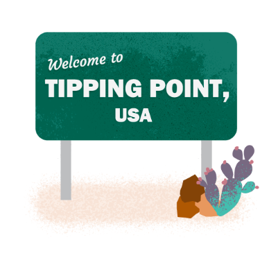

Interactive quiz for a survey on tipping culture. See more.
Calculate the gender wage gap in your area. See more.
Ad campaign in NYC and LA for Pew's Asian American research portfolio. See more.
Joe Biden and Donald Trump are among the oldest world leaders. See more.
What the data says about federal workers. See more.
Most Americans have at least one dispensary in their county. See more.
Social media graphics for Pew Research Center's 20 year anniversary. See more.
Rural hospitals are closing, and Georgia is ground zero. See more.

Fentanyl-related deaths are on the rise. See more.

South Korea has thousands of bomb shelters. See more.

2016 election results. See more.

Mapping police complaints in Chicago. See more.